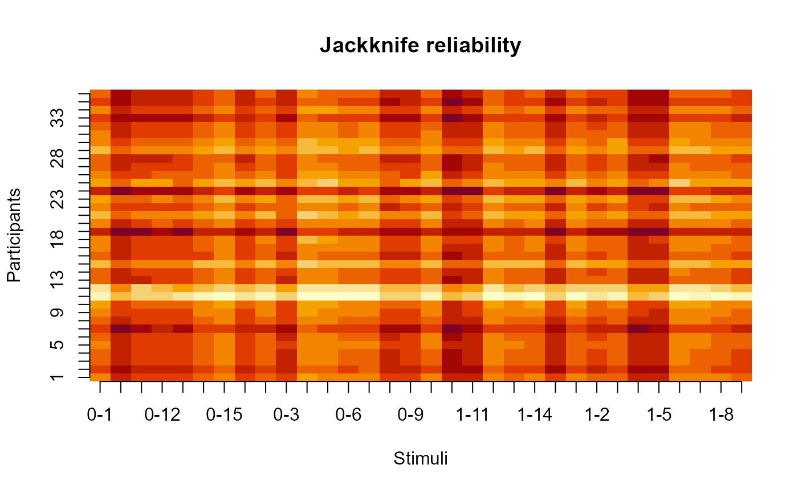

R/aat_covreliability.R
aat_covreliability.RdThis function computes mean single-difference scores (push minus pull) for individual stimuli, and computes the reliability from that information. Missing values are dealt with using multiple imputation.
This function computes the reliability when stimuli and participants are removed, allowing for the diagnosis of potential sources of unreliability within the data.
aat_covreliability(
ds,
subjvar,
stimvar,
pullvar,
targetvar = NULL,
rtvar,
aggfunc = c("mean", "median"),
algorithm = c("calpha", "lambda2", "lambda4"),
iters = 5
)
# S3 method for aat_covreliability
print(x, ...)
aat_covreliability_jackknife(
ds,
subjvar,
stimvar,
pullvar,
targetvar = NULL,
rtvar,
algorithm = c("calpha", "lambda2", "lambda4"),
iters = 5,
holdout = c("both", "participant", "stimulus", "cross")
)
# S3 method for aat_covreliability_jackknife
print(x, ...)
# S3 method for aat_covreliability_jackknife
plot(x, ...)the data.frame to use
Name of the subject-identifying variable
Name of the stimulus-identifying variable
Name of the movement-direction identifying variable
Optional. Name of the stimulus-category identifying variable
Name of the reaction-time identifying variable
The function with which to aggregate the RTs before computing difference scores. Defaults to mean but can be changed to median.
The reliability formula to use. Defaults to Cronbach's alpha, but Guttman's Lambda-2 is recommended instead.
If there are missing values (which is almost inevitable) then multiple imputation will be used to complete the covariance matrix - this option sets the number of multiple imputations to be used.
Object to be printed
Ignored
What should be removed from the data for computation of jackknife statistics? "both" computes reliability when stimuli and participants are separately removed, while "cross" computes reliability when stimuli and participants are simultaneously removed.
Returns an aat_covreliability object containing the reliability value
as well as the dataset and covariance matrix with replaced missing values. When
the argument targetvar is provided, the output also contains the reliability of the
individual stimulus categories and their intercorrelation.
aat_covreliability_jackknife() returns an aat_covreliability_jackknife object,
containing jackknife reliability statistics. If argument holdout was set to "cross",
then these statistics are provided in a matrix where rows represent participants and columns represent stimuli.
Otherwise, they are provided in data.frames where the stimulus or participant is represented in a column
alongside the associated reliability value.
When only one stimulus category is indicated, one of the commonly known reliability algorithms
provided with the algorithm argument is used.
When two stimulus categories are indicated, this function uses Lord's (1963) algorithm to
compute the reliability of a double mean difference score, using the algorithms in algorithm
to estimate the reliability of indiviau lstimulus categories.
When one wants to compute the reliability of a double median difference score or D-score,
aat_splithalf() is recommended instead.
print(aat_covreliability): Print an aat_covreliability object
print(aat_covreliability_jackknife): Print an aat_covreliability_jackknife object
plot(aat_covreliability_jackknife): Plot an aat_covreliability_jackknife object
Lord, F.Y. (1963), "Elementary Models for Measuring Change", in Problems in Measuring Change, C.W. Harris, ed.. Madison. Wisconsin: University of Wisconsin.
#We generate a dataset with 16 stimuli in each category
ds<-aat_simulate(biasfx_jitter=40,nstims=16)
ds$stim<-paste0(ds$stim,"-",ds$is_target)
# If Lord's formula and
# bootstrapped splithalf measure something similar,
# then the outcomes should be close to each other.
aat_covreliability(ds=ds,subjvar="subj",stimvar="stim",pullvar="is_pull",
targetvar="is_target",rtvar="rt")
#> r = .61
#> Based on 32 valid stimuli, 36 valid participants, and the calpha algorithm.
#> Reliability of stimulus category 1: r = .6, n = 16, sd = 50.54
#> Reliability of stimulus category 2: r = .66, n = 16, sd = 53.7
#> Category intercorrelation: r = .05
aat_splithalf(ds=ds,subjvar="subj",pullvar="is_pull",targetvar="is_target",rtvar="rt",
algorithm="aat_doublemeandiff",iters=100,plot=FALSE)
#>
#> Full-length reliability (Spearman-Brown coefficient):
#> SB (36) = .59, 95%CI [.31, .77], p = 0
#>
#> Uncorrected, average split-half correlation:
#> r (36) = .43, 95%CI [.19, .62], p = .01
#Testing reliability for single-difference scores
ds<-ds[ds$is_target==1,]
aat_covreliability(ds=ds,subjvar="subj",stimvar="stim",pullvar="is_pull",rtvar="rt")
#> r = .66
#> Based on 16 valid stimuli, 36 valid participants, and the calpha algorithm.
hh<-aat_simulate()
test<-aat_covreliability_jackknife(ds=hh,subjvar="subj",stimvar="stim",pullvar="is_pull",
targetvar="is_target",rtvar="rt",holdout="cross")
print(test)
#> Reliability: r = .66
#> Maximum achieveable reliability is with removal of stimulus 1-10 and participant 15: r = .72
plot(test)
